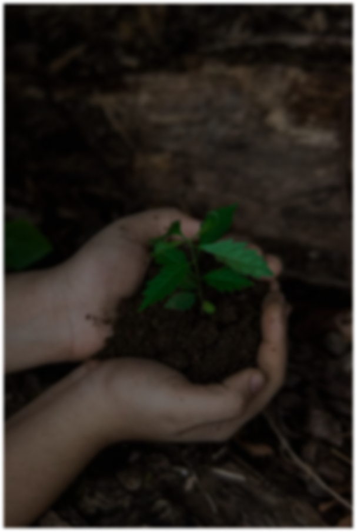
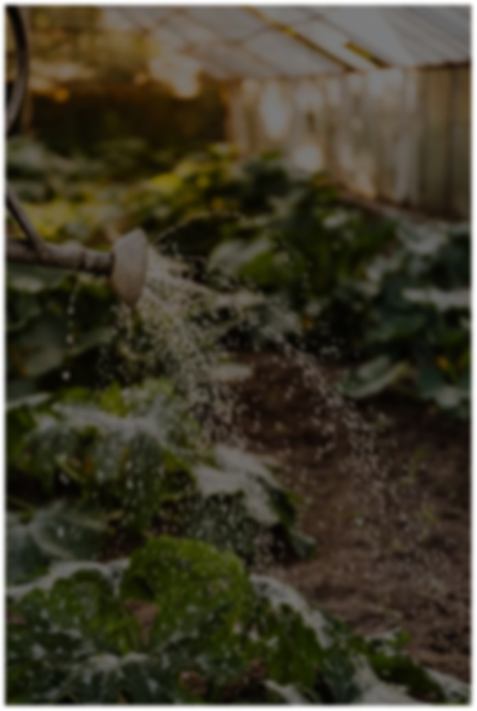
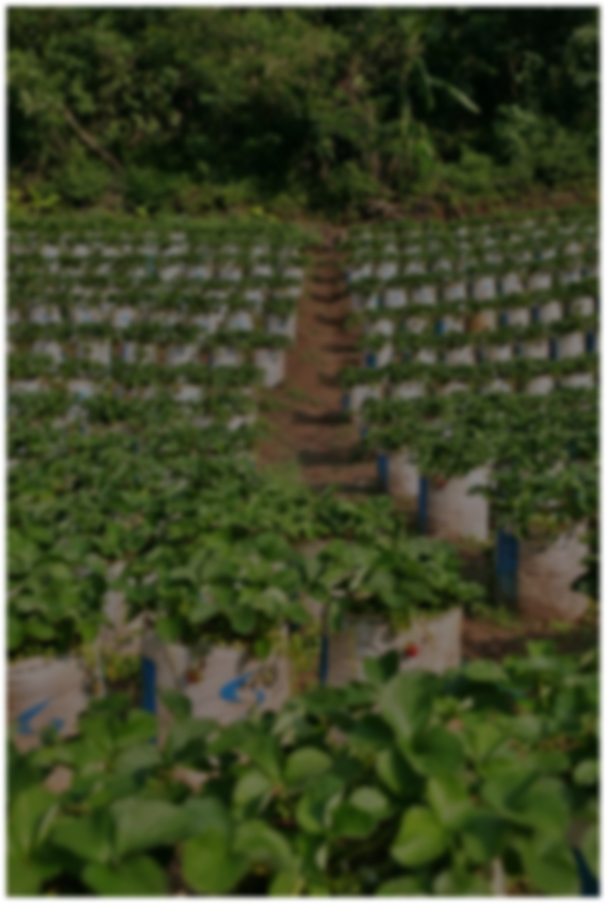
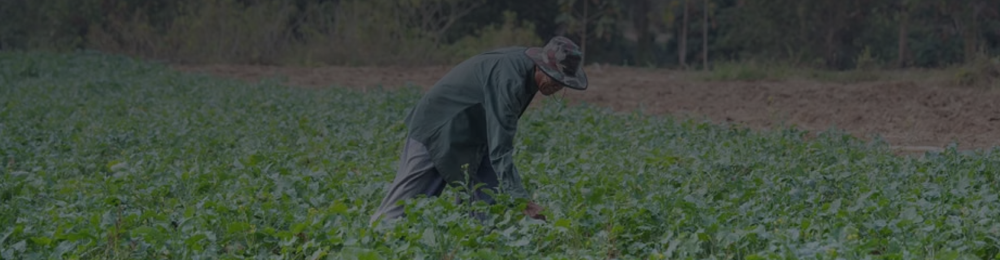

Calculadora de irrigação
Estime o consumo de água e os custos de irrigação a partir das informações da sua plantação.
Acessar calculadora arrow_forwardNossa plataforma foi feita para o pequeno produtor rural que quer produzir mais gastando menos.
Através de informações sobre clima, água e manejo, queremos transformar dados do plantio em informações mais claras para apoiar decisões no campo.
Conheça o CultivaFERRAMENTAS CULTIVA

Estime o consumo de água e os custos de irrigação a partir das informações da sua plantação.
Acessar calculadora arrow_forward
Explore características agrícolas, climáticas e orientações das cinco regiões brasileiras.
Explorar o mapa arrow_forward
Conheça desafios regionais e práticas que ajudam a planejar o uso dos recursos hídricos.
Ver orientações arrow_forwardCULTIVA

CULTIVA · CUIDADO EM CADA DECISÃO